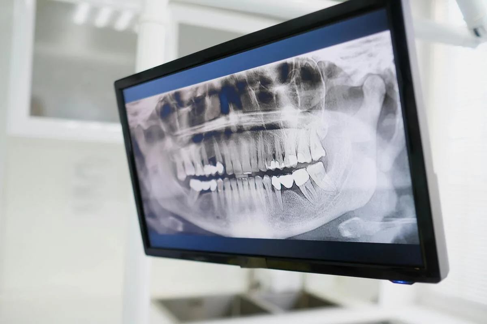
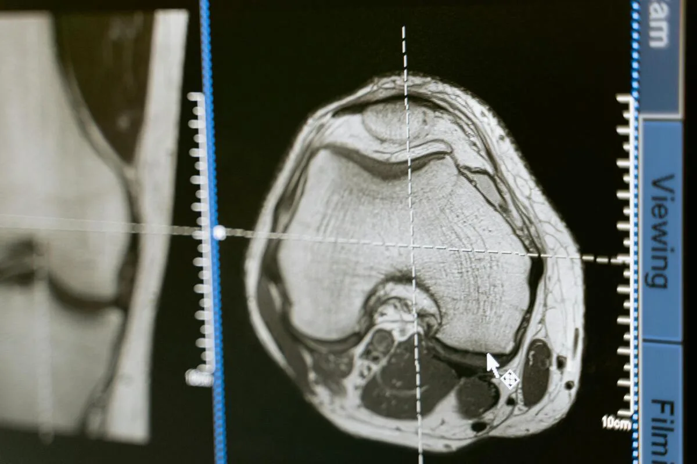
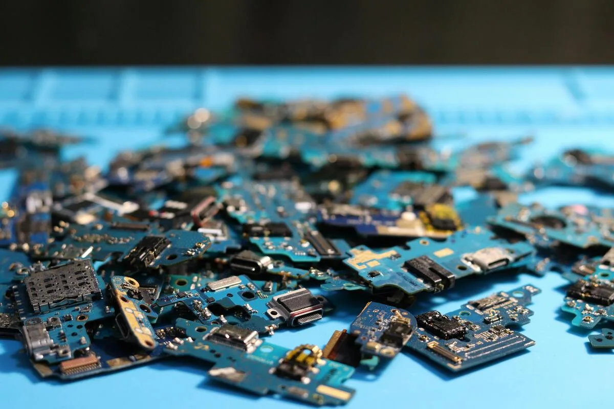

Dental Imaging
- Intraoral X-ray imaging
- Panoramic & cephalometric
- Wireless sensor workflow
- Low-dose diagnostics
Ultra-Fast Scanning Sensor →
Direct conversion X-ray imaging sensors for demanding dental, industrial, and medical workflows.
Application Areas
Athlos sensors are deployed in demanding environments where image quality, reliability, and precision are non-negotiable. The following are representative application areas — direct conversion technology is suited to a wide range of imaging challenges beyond those shown here.



Why Direct Conversion
Conventional X-ray sensors convert X-rays to visible light first, then detect the light. Each step introduces noise, resolution loss, and energy waste. Athlos sensors convert X-ray photons directly to charge — eliminating the scintillator entirely. The result is sharper images, better sensitivity, and wider dynamic range across all applications.
Explore the product rangeNot sure which product fits your imaging requirements? Athlos works with OEMs and system integrators to find the right technical path. Let's start with your application.